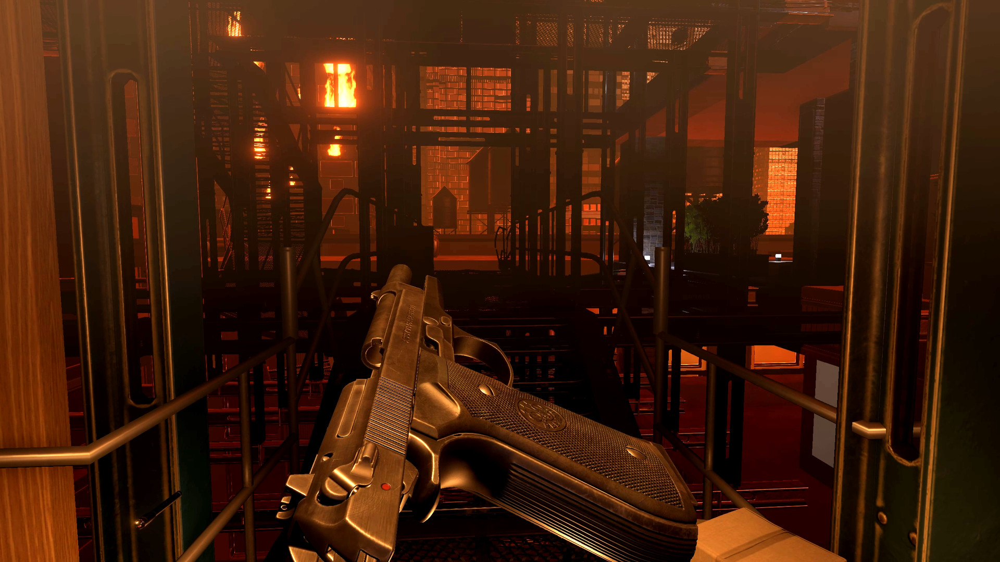
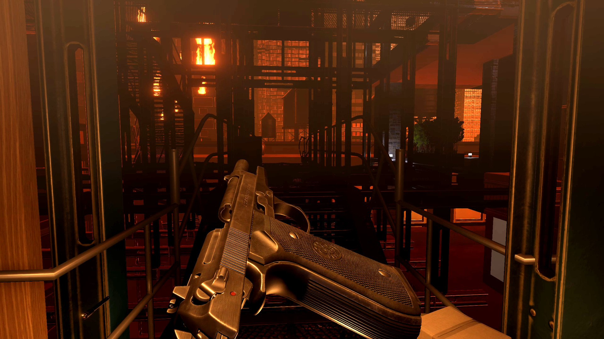

Having played the original Receiver, I was exhilerated to see Receiver 2 finally come out on Steam and I purchased it on the day of release. Receiver 2 is a rule breaker. Brutally unforgiving in gameplay, yet delightfully empathetic in tone, theme and story. This is Receiver 2. An unconventional game for an alternative gaming experience.
Receiver 2 is a first person shooter game with a unique control system. Instead of the conventional system where your gun is locked to your mouse and mouse movements control the crosshair; Over here you have a control system that features two modes of looking-around which layer over one another. The mouse first controls the direction in which you're looking at (Think of this as the mouse controlling which direction your face is pointed at), while the gun is held at its default resting position (barell pointed at the ground). You then press the right mouse button to raise the gun to line up it's sights to the center of your screen, at which point your aiming becomes more fine tuned.
Compared to conventional FPS games, this is a much more organic system which accurately mimics how a person in the real world would move.
 

This unique movement/aiming system is attributed to one of the main highlights of Receiver 2 - Realistic gun simulation. A lot of work has been put into detailed gun mechanics and operation. Accurately modelling how each component of the gun works in conjunction with one another. The player can individually control each component. Press and hold 'R' to pull back the slide, release the 'R' key to make it spring back into place. Or if you want to lock the slide in place, press and hold 'R' and then press 'T' while holding down the 'R' key. Then release both keys. This comes in useful when fixing malfunctions in the gun.
Receiver leaves a lot to the imagination………….a whole lot (as you’ll find out later in the review). But gun operation is not one of them.
If you run out of ammo, a simple '' Press R to reload '' is not going to do the trick. It expects you to do all the work involved. Press the ' E ' key to slide out the empty magazine, place your gun back in your holster so that you have both hands to work with. Press the ' Z ' key to individually load each bullet into the magazine. Once you're done, unholster your weapon and press the ' Z ' to slide it back into the gun. Press the ' R ' to cock the slide back and release it. Your gun is now ready to use.
During gameplay you will run into malfunctions. Sometimes the casing of the bullet you just fired, will fail to properly eject out and then get stuck within the frame, causing the slide to jam. In instances like this, you have manually pull back the slide so that the casing can come out. But be sure to tilt the barrell upwards so that gravity can make it fall.
All of this would seem overwhelming for a new player, but with practice it’ll soon become muscle memory.